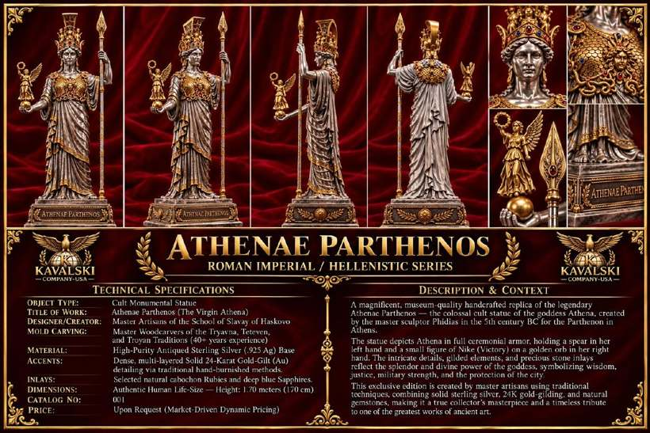

View detailsCat. 001 · Roman Imperial / Hellenistic Series
Athenae Parthenos
Life-size replica of Phidias’s colossal cult statue of Athena for the Parthenon, in full ceremonial armor with Nike on a golden orb.
Sterling silver (.925) with 24K gold-gilt, ruby and sapphire cabochons · Height 1.70 m
Price: Upon request
Price: Upon request